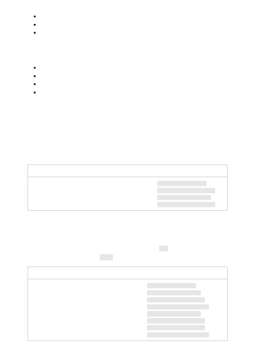

Each family includes models across a range of capability. The following list indicates the
length of the numerical vector returned by the service, based on model capability:
Ada: 1024 dimensions
Babbage: 2048 dimensions
Curie: 4096 dimensions
Davinci: 12288 dimensions
Davinci is the most capable, but is slower and more expensive than the other models.
Ada is the least capable, but is both faster and cheaper.
These models are good at capturing semantic similarity between two or more pieces of
text.
Use cases
Models
Clustering, regression, anomaly detection, visualization
text-similarity-ada-001
text-similarity-babbage-001
text-similarity-curie-001
text-similarity-davinci-001
These models help measure whether long documents are relevant to a short search
query. There are two input types supported by this family: doc, for embedding the
documents to be retrieved, and query, for embedding the search query.
Use cases
Models
Search, context relevance, information retrieval
text-search-ada-doc-001
text-search-ada-query-001
text-search-babbage-doc-001
text-search-babbage-query-001
text-search-curie-doc-001
text-search-curie-query-001
text-search-davinci-doc-001
text-search-davinci-query-001
Similarity embedding
Text search embedding